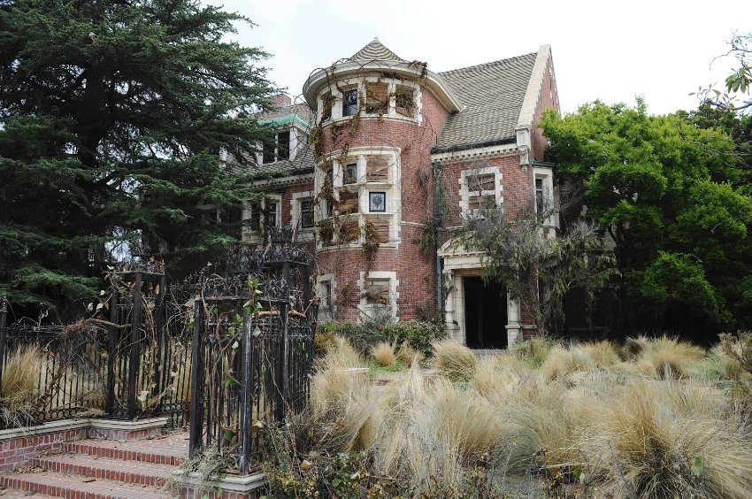
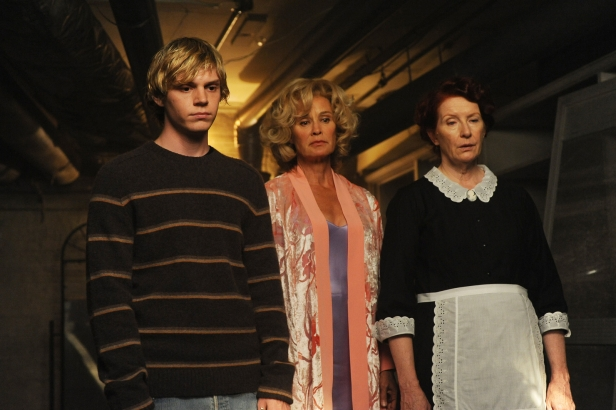

A gyilkos ház középpontjában a Harmon család áll: Ben, Vivien és Violet, akik Bostonból költöztek Los Angelesbe, miután Vivien elvetélt, Bennek pedig viszonya volt egyik diákjával. Egy felújított kúriába költözik a család. Az előző homoszexuális tulajdonosról pedig kiderül, hogy meggyilkolták/öngyilkos lett, mégpedig korábbi partnere keze által. Szomszédjuk Constance és lánya, Addie gyakran meglátogatják az új lakókat, illetve sokszor hívás nélkül is bemennek a házba. Addie, akinek Down-szindrómája van, valamilyen titokzatos módon kapcsolódik a ház véres múltjához. A padláson Vivien és Ben egy gumiruhát találnak. A házhoz „tartozik” még Moira a házvezetőnő is aki Ben szemében fiatal és vonzó nőként mutatkozik, a család nő tagjai előtt viszont egy idős hölgyként jelenik meg.  Ben megkezdi praxisát és elkezdi betegei kezelését, közöttük egy feltételezhetően elmebeteg fiatalt Tate Langdont . Aki egyre közelebb kerül Violethez. Violet rájön, hogy Tate egy szellem, illetve Constance fia. Ahogy a család berendezkedik egyre gyakrabban furcsa és megmagyarázhatatlan események történnek a házban. Hamarosan fény derül arra, hogy a házban története során több mint 20 ember halt meg és a környéken csak, „Gyilkos ház”-ként ismerik az épületet. A családban egyre több feszültséget szülnek a belső ellentétek, illetve lassan ráébrednek, hogy a házban elhalálozottak a házban maradnak és szellemként kísértenek. Ben és Vivien szeretkeznek. Ezután, tudtán kívül Vivien lefekszik Tate-tel, akiről azt hiszi, hogy Ben a bőrruhában. Vivien teherbe esik, mégpedig ikrekkel. Az egyik apja Ben, míg a másiké Tate. Több szellem is megpróbálja az őrületbe kergetni Vivient, hogy megszerezzék a születendő gyermekét. Violet öngyilkosságot követ el, azonban nem veszi észre és csak akkor jön rá, amikor nem tudja elhagyni a házat. Vivien a házban életet ad az ikreknek. Az első egy pár perc után, meghal, azonban a második túléli a szülést. A kicsik születése után Viven belehal a szülésbe. Constance rájön, hogy az életben maradt gyermek apja Tate és arra bátorítja Bent, hogy hagyja el a házat. Ben összetűzésbe kerül korábbi szeretőjével Haydennel, aki megöli Bent, mégpedig úgy, hogy felakasztja. Constance talál rá Ben holttestére, ezek után pedig elviszi a gyermeket. A rendőrség arra a következtetésre jut, hogy Ben bánatában öngyilkos lett, Violet pedig, akinek a testét sohasem találták meg, elszökött a csecsemővel.  Ben, Vivien és Violet a házban ragadva élik mindennapjaikat a többi szellemmel együtt és a család megpróbál minden új lakót elűzni, hogy senki ne lelje halálát a házban. A sorozat itt három évet ugrik az időben és kiderül, hogy Constance titokban neveli Harmonék életben maradt gyermekét. Majd meglátja, hogy a gyermek brutálisan végzett dadájával.